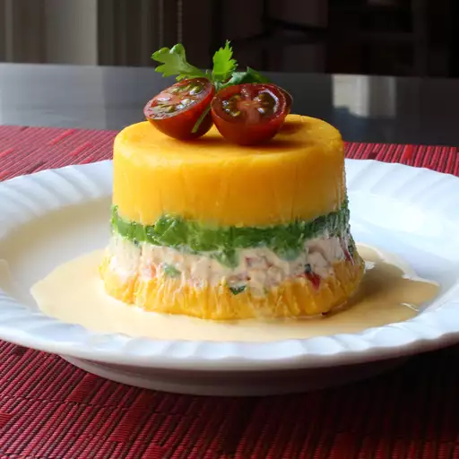

Home
Causa

Description:
This layered Peruvian potato and chicken salad is called "causa rellena" in Peru. There's nothing very unusual
about serving a chicken or potato salad at a cookout but this beautiful layered salad is sure to cause a stir!
Perfect for making ahead and packing in your cooler on a hot summer day. Garnish with cherry tomatoes and
cilantro if desired.
Ingredients:
- 1 large cooked chicken breast, diced or shredded
- ¼ cup green peas
- ¼ cup diced cooked carrot
- 1 teaspoon minced shallot
- 2 tablespoons finely chopped roasted red peppers
- 2 tablespoons chopped fresh cilantro
- 1 teaspoon lime juice
- ¼ cup mayonnaise, or as needed
- 1 ¼ pounds Yukon Gold potatoes, peeled and quartered
- 2 tablespoons aji amarillo chili paste, or to taste
- 2 tablespoons olive oil
- 1 lime, juiced, or more to taste
- cayenne pepper to taste
- salt to taste
- 1 avocado, quartered and sliced
- ⅓ cup mayonnaise
- 1 tablespoon sour cream (Optional)
- 1 small clove garlic, crushed
- 2 teaspoons aji amarillo chili paste, or to taste
- 1 teaspoon water as needed
Steps:
- Combine chicken, green peas, carrot, shallot, roasted red peppers, cilantro, and lime juice in a bowl.
Season with salt and cayenne. Add mayonnaise and mix until combined. Cover chicken salad with plastic wrap
and refrigerate until ready to use.
- Place potatoes into a pot and cover with salted water; bring to a boil. Reduce heat to medium-low and simmer
until very tender but not falling apart, about 20 minutes. Drain well and transfer potatoes to a mixing
bowl. Mash until smooth.
- Add ají amarillo, olive oil, and lime juice to the potatoes. Season with cayenne and salt. Mash together
with a potato masher. Switch to a spatula and mix until completely smooth.
- Line four 6-ounce ramekins with plastic wrap. Scoop mashed potatoes evenly into ramekins; press and smooth
out the tops. Cover each with a layer of avocado slices. Fill each ramekin to the top with chicken salad,
pressing it down and pulling up the plastic wrap to eliminate any air pockets. Cover with a final layer of
mashed potatoes, going up to 1/2 inch or more over the rim.
- Seal top with a new layer of plastic wrap and fold the sides over to seal. Refrigerate salads until
completely chilled, at least 1 hour.
- Mix mayonnaise, sour cream, garlic, and ají amarillo together for the sauce, adding a splash of water to
adjust the thickness.
- Remove the top layer of plastic wrap from each salad. Invert each ramekin onto a serving plate; remove
ramekins, then plastic wrap. Spoon some sauce around each salad.